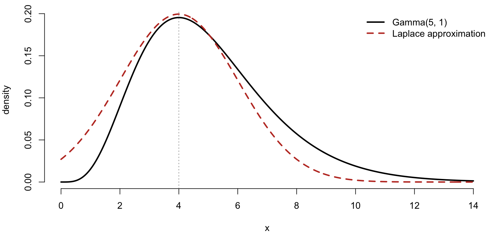
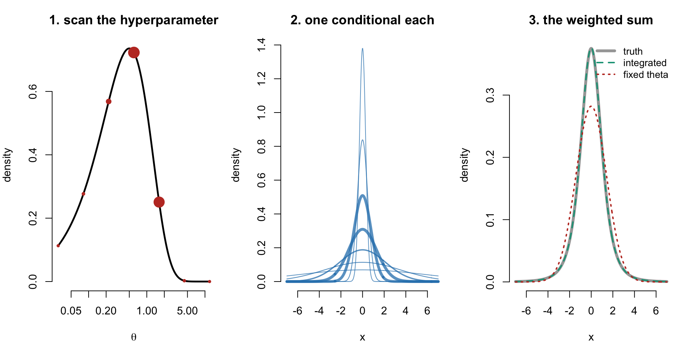

shape <- 5; rate <- 1
# log density, up to a constant
lf <- function(x) (shape - 1) * log(x) - rate * x
# 1. the mode
mode <- optimise(lf, c(1e-6, 50), maximum = TRUE)$maximum
# 2. curvature there: -f''(x) = (shape - 1) / x^2
prec <- (shape - 1) / mode^2
sdev <- 1 / sqrt(prec)
curve(dgamma(x, shape, rate), 0, 14, n = 400, lwd = 2.5, bty = "n",
xlab = "x", ylab = "density")
curve(dnorm(x, mode, sdev), add = TRUE, n = 400, lwd = 2.5,
lty = 2, col = "#c0392b")
abline(v = mode, lty = 3, col = "grey60")
legend("topright", bty = "n", lwd = 2.5, lty = c(1, 2),
col = c("black", "#c0392b"),
legend = c("Gamma(5, 1)", "Laplace approximation"))INLA and R-INLA
Approximate Bayesian inference for latent Gaussian models
Aug 20, 2026
Outline
- Recap: where Bayesian inference gets expensive
- What we actually need from a posterior
- Latent Gaussian models: structure and limits
- Sparsity, and why the largest layer is the cheap one
- The Laplace approximation
- The three steps of the INLA algorithm
- Accuracy, speed, and limits
R-INLA: syntax,f(), priors, output- Pooling models revisited in
INLA - Model comparison and spatial extensions
Recap: Bayesian inference
\[P(\theta|y) \propto P(y|\theta) P(\theta)\]
- \(P(\theta)\) is the
prior(known or estimated a priori). - \(P(y|\theta)\) is the
likelihood(probability of data given parameters of interest). - \(P(\theta|y)\) is the
posterior(parameters of interest given data).
The usual answer: MCMC
- Do not compute the integral. Sample from the posterior instead.
- Gibbs, Metropolis-Hastings, HMC/NUTS (
NIMBLE,Stan,JAGS). - Guaranteed to be correct in the limit of infinite samples.
- General: works for essentially any model you can write down.
- This is what we did basically until now with
NIMBLE.
What MCMC costs
- Time. A spatiotemporal model over 8,000 areas and 20 years has \(>\) 160,000 latent parameters to sample.
- Convergence diagnostics. Trace plots, \(\hat{R}\), effective sample size, burn-in, thinning — all need testing and re-testing.
- Autocorrelation. Strongly correlated latent fields mix badly; effective sample size can be a small fraction of the nominal one.
- Iteration cost. Every time you change a prior or add a covariate, you wait again.
What MCMC costs
- Model development is where the pain really is: you may fit a model thirty times before you fit it once for real.
- When models are complex, particularly with hierarchical structures or with massive datasets, MCMC can become unfeasible.
Where MCMC starts to become strained
- Disease mapping: one random effect per small area, spatially correlated by construction.
- Space-time interactions: \(N_{\text{area}} \times T\) parameters.
- Cross-validation: refitting the model \(n\) times often not feasible.
- Sensitivity analysis over priors: same problem again.
Building blocks of inference
- Data generation runs top to bottom.
- Inference recovers bottom to top.
- The large layer is Gaussian; the layer that is not Gaussian is small.
An illustrative example
Example: weekly death counts by county, with a heat term, a spatial term and a temporal trend.
code <- nimbleCode({
alpha ~ dnorm(0, sd = 10)
beta ~ dnorm(0, sd = 10)
tau_b ~ dgamma(1, 0.01)
tau_g ~ dgamma(1, 0.01)
phi ~ dbeta(1, 1)
for (i in 1:N) {
deaths[i] ~ dpois(mu[i])
log(mu[i]) <- log(E[i]) + alpha + beta * heat[i] +
b[county[i]] + gamma[week[i]]
}
s[1:M] ~ dcar_normal(adj[1:L], w[1:L], num[1:M], 1, zero_mean = 1)
for (j in 1:M) {
theta[j] ~ dnorm(0, 1)
b[j] <- (sqrt(1 - phi) * theta[j] + sqrt(phi / scl) * s[j]) / sqrt(tau_b)
}
gamma[1] ~ dnorm(0, sd = 10)
for (t in 2:Tw) {
gamma[t] ~ dnorm(gamma[t - 1], tau_g)
}
})The data
- 3,108 counties over 52 weeks.
- Each row reaches the model through one number — its own linear predictor.
The latent field
Everything unobserved, stacked into one vector:
| Piece | Elements |
|---|---|
| intercept | 1 |
coefficient on heat |
1 |
bym2 county effects |
6,216 |
rw1 weekly trend |
52 |
| the linear predictors | 161,616 |
The hyperparameters
Not part of what the model predicts, but quantities that govern the shape of the latent field:
- the
bym2precision — how much the county effects vary. - the
bym2mixing proportion \(\phi\) — how much of that is spatial rather than unstructured. - the
rw1precision — how smooth the weekly trend is.
What is in each layer
The latent field collects everything unobserved that enters the linear predictor:
- the intercept and every regression coefficient,
- every random effect, smooth curve, spatial field and time trend,
- and the linear predictors themselves.
It is usually larger than the dataset, because the linear predictors sit inside it. Fixed effects belong to it too, since a vague Gaussian prior is still a Gaussian prior.
The hyperparameters are what remains — the precisions of random effects, correlation and range parameters, mixing proportions such as the BYM2 \(\phi\), and likelihood-specific quantities such as negative binomial dispersion.
They govern the shape of the latent field. There are far fewer of them than there are elements in the field. This model has three.
The class of latent Gaussian models
Every latent Gaussian model has a linear predictor of this form:
\[ \eta_i \;=\; \underbrace{\alpha}_{\text{intercept}} \;+\; \underbrace{\sum_{k} \beta_k z_{ki}}_{\text{linear terms}} \;+\; \underbrace{\sum_{j} f_j(u_{ji})}_{\text{structured terms}} \]
with a Gaussian prior on everything in it, and a short list of hyperparameters governing the \(f_j\).
The class of latent Gaussian models
The whole class comes from choosing what the \(f_j\) are:
| Choose \(f_j\) to be | and you have |
|---|---|
| nothing | a GLM |
| independent by group | a mixed / multilevel model |
| a random walk over time | a smooth trend |
| a random walk over exposure | a non-linear exposure–response curve |
| neighbours on a map | ICAR, BYM2, Leroux |
| a Matérn field over space | SPDE / geostatistics |
| space crossed with time | a spatiotemporal interaction |
- Same model with different \(f_j\) — which is why one algorithm fits all of them.
The latent field as a multivariate normal
The latent field is one vector of length \(m \approx 168{,}000\), with a multivariate normal prior:
\[ \boldsymbol{x} \mid \boldsymbol{\theta} \;\sim\; N\big(\boldsymbol{0},\, \boldsymbol{\Sigma}(\boldsymbol{\theta})\big) \qquad\text{or}\qquad \boldsymbol{x} \mid \boldsymbol{\theta} \;\sim\; N\big(\boldsymbol{0},\, \boldsymbol{Q}(\boldsymbol{\theta})^{-1}\big), \]
\[ \qquad \boldsymbol{Q} = \boldsymbol{\Sigma}^{-1} \]
The precision matrix \(\boldsymbol{Q}\) often has useful properties (sparse, Markov).
Latent field often has a Gaussian Markov Random Field (GMRF) prior
- Each term is Gaussian, so stacking them gives a Gaussian vector. Nothing is lost by treating them as one object.
- Each term is also local. A random walk is a Markov chain; an adjacency structure is a Markov random field. Neither has any long-range link written into it.
What the GMRF structure allows
- \(\boldsymbol{Q}\) is almost entirely blank.
- Sparsity of the \(\boldsymbol{Q}\) enable large computational gains when making inference (outside scope).
Summmary of GMRF
- Gaussian gives the algebra: means, variances and conditionals all in closed form once \(\boldsymbol{Q}\) is known.
- Markov gives the sparsity: no direct link means a blank entry in \(\boldsymbol{Q}\), and the blanks are almost everything.
- Distant counties are still correlated — they share what lies between them. The blanks record the absence of a direct link, not of a relationship.
Laplace approximation
Take any density \(f(x)\), work on the log scale, and expand about the mode \(x^{*}\) via Taylor expansion, where the first derivative vanishes :
\[ \log f(x) \;\approx\; \underbrace{\log f(x^{*})}_{\text{height}} \;+\; \underbrace{\tfrac{1}{2} \log f''(x^{*})\,(x - x^{*})^{2}}_{\text{curvature}} \]
Writing \(H = -\log f''(x^{*})\) for the negative curvature, exponentiating gives a Gaussian:
\[ f(x) \;\approx\; f(x^{*}) \exp\!\left(-\tfrac{1}{2} H (x - x^{*})^{2}\right) \qquad\Longrightarrow\qquad x \;\sim\; N\!\left(x^{*},\; H^{-1}\right) \]
So the whole approximation is two numbers: the mode, and the curvature there. In our example \(x^{*} = 4\) and \(H = 0.25\), giving \(N(4, 2^{2})\).
The same expansion also gives the integral in closed form:
\[ \int f(x)\, \mathrm{d}x \;\approx\; f(x^{*})\, (2\pi)^{d/2} \, |H|^{-1/2} \]
The Laplace approximation visually
- Laplace (1774): approximate an awkward integrand by the Gaussian that matches it at the mode, after which the integral is available in closed form.
- It is reliable when the target is unimodal and not strongly skewed.
- With a GMRF prior and the hyperparameters fixed, this gives a deterministic joint Gaussian approximation to the whole latent field.
Laplace approximation: a worked example
Two numbers do all the work: where the peak is, and how sharply it falls away.
Laplace approximation: a worked example

The peak is matched exactly as per matching at the mode. What it misses is the skew: the target leans right, so its mean sits above its mode, and a symmetric curve cannot follow.
Integrating nested Laplace Approximation: a worked example
A case with a known exact answer. Let \(x \mid \theta \sim N(0, 1/\theta)\) with \(\theta \sim \text{Gamma}(2,2)\) — so \(\theta\) is a precision, as in our models.
a <- 2; b <- 2; K <- 7
# 1. scan theta — a grid on the log scale, as INLA does
theta <- exp(seq(log(0.03), log(12), length.out = K))
w <- dgamma(theta, a, b) * theta # Jacobian for the log scale
w <- w / sum(w) # plausibility weights
# 2. the conditional for x at each value of theta
x <- seq(-7, 7, length.out = 400)
cond <- sapply(theta, \(t) dnorm(x, 0, 1 / sqrt(t)))
# 3. integrate: the weighted sum
marg <- as.vector(cond %*% w)Three lines, three stages. Everything INLA does to the 168,000-element field has this shape.
Integrating nested Laplace Approximation: a worked example

Integrating nested Laplace Approximation: a worked example
| at \(x = 0\) | at \(x = 3\) | at \(x = 6\) | |
|---|---|---|---|
| truth | 0.3750 | 0.01969 | 0.001186 |
| integrated, 7 points | 0.3759 | 0.01974 | 0.001167 |
fixed \(\theta\) (eb) |
0.2821 | 0.02973 | 0.000035 |
- Seven points recover the exact answer to three decimals. Fixing \(\theta\) gets the peak wrong and the far tail wrong by a factor of thirty — and the tail is where interval endpoints live.
Integrating nested Laplace Approximation: more than one hyperparameter
We try several combinations, and combine the answers. It can be computationally expensive…
Where to put the combinations
- The contours are the same in all three — the same posterior over the three hyperparameters. Only the choice of where to evaluate it differs.
- Every point costs one pass through Question 1: mode-finding, sparse factorisation, a joint Gaussian over the field.
INLA with our previous example
We want a posterior for each unknown: the heat coefficient, each county effect, each week. The obstacle is that every one of them depends on the three hyperparameters — and we do not know those either.
Three strategies for the latent marginals
Set by strategy in control.inla:
- Gaussian (
"gaussian"): read the marginal straight off the Gaussian approximation. Fastest; can be poor in the tails and misses skewness. - Simplified Laplace (
"simplified.laplace"): a third-order correction to the Gaussian, capturing location and skewness. The default, and almost always the right choice. - Laplace (
"laplace"): a full nested Laplace approximation for each \(x_i\). Most accurate, and considerably more expensive.
The middle option exists because the Gaussian is usually close, and a cheap correction for asymmetry recovers most of what a full recomputation would give. Note where the cost sits: it scales with the number of hyperparameters and the sparsity of \(\boldsymbol{Q}\), not with the size of the latent field — which is the shape that made these models slow to sample in the first place.
Three strategies for the latent marginals
Solid line: the true marginal for one element. Dashed: what each strategy returns. Set by strategy in control.inla.
What each question needed
| Question 1: the field | Question 2: the hyperparameters | |
|---|---|---|
| What we did | sparse solves, then one joint Gaussian over the field | try a few combinations, then average |
| What made it possible | Gaussian prior, and \(\boldsymbol{Q}\) mostly blank | there are only three hyperparameters |
| What would break it | a field that is not Gaussian, or not blank | too many hyperparameters |
So the method carries two conditions, one from each half:
- The latent field has a Gaussian prior, and its links are local.
- The hyperparameters are few.
What fits and what doesn’t
| Fits | Does not fit |
|---|---|
| Linear and generalised linear models | Finite mixtures with many components |
| Mixed and multilevel models | Models with hundreds of variance components |
| RW1, RW2, AR(\(p\)), seasonal terms | Dirichlet process and non-parametric priors |
| Splines and non-linear exposure–response | Heavy-tailed or latent \(t\) fields |
| ICAR, BYM, BYM2, Leroux, SPDE | Likelihoods depending non-linearly on many latent elements |
| Space–time interactions, types I–IV | |
| Measurement error, survival models |
Every entry on the right fails condition 1 or condition 2 — nothing else. And the left-hand column is most of what we fit in environmental epidemiology.
Summary of the entire INLA process
Why it is fast
- No sampling, so no autocorrelation and no wasted iterations.
- Sparse matrix algebra on \(\boldsymbol{Q}(\boldsymbol{\theta})\): Cholesky factorisation exploiting the Markov structure.
- The expensive work scales with \(\dim(\boldsymbol{\theta})\), which is small — not with the size of the latent field, which is large.
- Everything at a given \(\boldsymbol{\theta}^{(k)}\) is parallel (
num.threads).
Why it’s not instant
- The hyperparameter grid grows geometrically. The cost of integrating over \(\boldsymbol{\theta}\) scales roughly as \(O(g^{\dim(\boldsymbol{\theta})})\). This is the wall you hit — not \(n\), not \(m\).
- Finding the mode of \(p(\boldsymbol{\theta} \mid \boldsymbol{y})\) is an optimisation, and every function evaluation is a full sparse factorisation with numerical gradients on top.
- Sparse is not the same as cheap. Depends on the graph structure, not just the number of zeros. Type IV space–time interactions and densely-connected adjacency graphs fill in badly.
- Accuracy costs.
strategy = "laplace"is far more expensive than the default"simplified.laplace", which in turn costs more than"gaussian". - SPDE meshes. Every extra mesh node enlarges the latent field. An over-refined mesh is the single most common reason a spatial model crawls (outside scope).
- Memory is often the binding constraint, not time. A lot held in memory for this.
The number of hyperparameters is the limiting factor
The number of hyperparameters is the limiting factor
Add a dial and the points do not increase — they multiply. Taking five per dial for illustration:
| Hyperparameters | Grid points | At 0.5 s each |
|---|---|---|
| 2 | 25 | 12 seconds |
| 4 | 625 | 5 minutes |
| 6 | 15,625 | 2 hours |
| 8 | 390,625 | 2 days |
| 10 | 9,765,625 | 7 weeks |
How accurate is it?
- For latent Gaussian models with well-behaved likelihoods, INLA and long MCMC runs typically agree to two or three decimal places on posterior means and quantiles.
- Accuracy degrades when:
- the number of observations per latent parameter is very small (e.g. binary data with one observation per random effect).
- the likelihood is far from Gaussian and weakly informative.
- the posterior is genuinely multimodal.
- Check with
inla(..., control.compute = list(config = TRUE))and compare against a short MCMC run when it matters.
When not to use INLA
- Beyond the two conditions already covered, three practical cases:
- You need the joint posterior over many latent parameters, not marginals. (Partly recoverable via
inla.posterior.sample().) - Genuinely multimodal posteriors.
- (Potentially): Novel likelihoods with no
INLAimplementation — thoughrgenericandcgenericlet you write your own.
Using R-INLA
Installation
INLAis not on CRAN. Install from the project repository:
- Use
testinginstead ofstablefor the development version. inla.upgrade()to update in place.
The central function: inla()
What the formula means
y ~ ...on the scale of the linear predictor.- Everything on the right-hand side that is not wrapped in
f()is a fixed effect (Gaussian prior, vague by default). - Everything wrapped in
f()is a structured latent component. - Offsets: use
E =for Poisson (expected counts) orNtrials =for binomial. NoteEis on the natural scale, not logged. -1removes the intercept, exactly as inlm().
The f() function
indexmust be an integer or factor indexing the latent component — not the covariate value itself.- Each
f()term adds hyperparameters to \(\boldsymbol{\theta}\).
Some latent models available
model = |
Structure | Typical use |
|---|---|---|
"iid" |
Independent Gaussian | Unstructured group effects |
"rw1", "rw2" |
Random walk | Smooth time trends, exposure-response |
"ar1" |
Autoregressive | Serially correlated time series |
"besag" |
ICAR | Spatial, neighbours only |
"bym2" |
Reparameterised BYM | Disease mapping (recommended) |
"spde2" |
Matérn via SPDE | Point-referenced / continuous space |
"generic0"-"generic3" |
User-supplied \(\boldsymbol{Q}\) | Custom structures |
inla.list.models() gives the full list.
Complete pooling in INLA
Recall from the lecture:
\[ \begin{split} y_i &\sim \text{Pois}(\mu_i) \quad i = 1,\ldots,N \\ \log(\mu_i) &= \log(E_i) + \alpha \end{split} \]
- One intercept, shared by every province. No
f()term, so \(\boldsymbol{\theta}\) is empty.
No pooling in INLA
\[ \begin{split} y_i &\sim \text{Pois}(\mu_i) \\ \log(\mu_i) &= \log(E_i) + \alpha_{j[i]} \end{split} \]
- Province enters as a fixed effect: independent parameters, no borrowing of strength.
-1drops the global intercept so each level is estimated directly.
Partial pooling in INLA
\[ \begin{split} \log(\mu_i) &= \log(E_i) + \alpha + \theta_{j[i]}, \quad \theta_j \sim N(0, \sigma^2_p) \end{split} \]
- One line of difference from the pooled model.
Reading the output: fixed effects
- Columns:
mean,sd,0.025quant,0.5quant,0.975quant,mode,kld. kldis the Kullback-Leibler divergence between the Gaussian and the simplified Laplace marginal. Values much above \(\sim 0.01\) suggest the approximation is straining.- Exponentiate for rate ratios — but do it on the marginal, not on the summary, if you want a correct interval.
Reading the output: hyperparameters
INLAreports precisions, not standard deviations: \(\tau = 1/\sigma^2\).- A posterior mean of a precision is not the reciprocal of the posterior mean of a variance. Transform the whole marginal:
Random effects and shrinkage
- Compare the spread of these to the unpooled
factor(province)estimates: the hierarchical ones are pulled toward zero. - Provinces with small expected counts shrink most — adaptive regularisation, estimated from the data.
Priors: what INLA does by default
- Intercept: \(N(0, 1000^2)\) — effectively flat.
- Other fixed effects: \(N(0, 1000^2)\) by default; set via
control.fixed = list(mean = 0, prec = 0.01). - Random effect precisions:
loggamma(1, 5e-5)on the log-precision. - Always state your priors in the paper. Always run a sensitivity analysis.
PC priors
Penalised complexity priors (Simpson et al., 2017) shrink toward a simpler base model — here, \(\sigma = 0\) — with an exponential penalty on the distance from it.
- Read as \(P(\sigma > U) = \alpha\).
param = c(1, 0.01): “we think it is unlikely (1% chance) that the between-group SD exceeds 1 on the log scale”.- Interpretable, weakly informative, and conservative — they do not invent structure that is not in the data.
- Recommended default for all variance components.
Model comparison: DIC, WAIC, CPO
dic$p.effandwaic$p.eff: effective number of parameters, a nice numerical read on how much shrinkage is happening.- PIT values (
m$cpo$pit) should be roughly uniform if the model is calibrated.
Two-level IID model in INLA
City effects and year-within-city effects, as in the lecture:
\[ \log(\mu_{ijt}) = \log(E_{ijt}) + \alpha + \beta x_{ijt} + \theta_j + \gamma_{jt} \]
d$city_id <- as.integer(as.factor(d$city))
d$cityyear_id <- as.integer(as.factor(paste(d$city, d$year)))
pc <- list(prec = list(prior = "pc.prec", param = c(1, 0.01)))
m2 <- inla(
admissions ~ 1 + pm25 +
f(city_id, model = "iid", hyper = pc) +
f(cityyear_id, model = "iid", hyper = pc),
family = "poisson", E = expected, data = d,
control.compute = list(dic = TRUE, waic = TRUE)
)- Two hyperparameters. Two
f()terms.
Spatial extension: BYM2
nb <- poly2nb(shp)
nb2INLA("map.adj", nb)
g <- inla.read.graph("map.adj")
m_bym2 <- inla(
deaths ~ 1 + f(area_id, model = "bym2", graph = g,
scale.model = TRUE,
hyper = list(
prec = list(prior = "pc.prec", param = c(1, 0.01)),
phi = list(prior = "pc", param = c(0.5, 0.5)))),
family = "poisson", E = expected, data = shp,
control.compute = list(dic = TRUE, waic = TRUE)
)bym2separates total SD from the mixing parameter \(\phi\): the proportion of variance that is spatially structured.scale.model = TRUEmakes the precision comparable across maps — essential for the prior to mean anything.
Practical tips and common errors
- “Index for f() must be integer or factor” — you passed a covariate value. Create an explicit
1:nindex. - Missing values in
yare predicted, not dropped. Useful, but be deliberate about it. - Model does not converge: try
control.inla = list(strategy = "gaussian", int.strategy = "eb")first to check the model runs, then tighten.
Practical tips and common errors
control.inla = list(h = 0.01)if the numerical Hessian misbehaves.- Centre and scale continuous covariates: it helps the optimiser and makes priors interpretable.
verbose = TRUEprints what the optimiser is actually doing.
INLA vs NIMBLE
NIMBLE |
INLA |
|
|---|---|---|
| Inference | MCMC (exact in the limit) | Deterministic approximation |
| Model class | Anything you can write in BUGS | Latent Gaussian models |
| Spatiotemporal model | Hours | Seconds to minutes |
| Priors | Fully flexible | Gaussian latent field required |
| Diagnostics | \(\hat{R}\), ESS, traces | kld, CPO failures, PIT |
| Best for | Bespoke, non-standard models | Standard hierarchical/spatial models, model development |
- We will see models in
INLAgoing forward
An illustrative example (again)
Example: weekly death counts by county, with a heat term, a spatial term and a temporal trend.
code <- nimbleCode({
alpha ~ dnorm(0, sd = 10)
beta ~ dnorm(0, sd = 10)
tau_b ~ dgamma(1, 0.01)
tau_g ~ dgamma(1, 0.01)
phi ~ dbeta(1, 1)
for (i in 1:N) {
deaths[i] ~ dpois(mu[i])
log(mu[i]) <- log(E[i]) + alpha + beta * heat[i] +
b[county[i]] + gamma[week[i]]
}
s[1:M] ~ dcar_normal(adj[1:L], w[1:L], num[1:M], 1, zero_mean = 1)
for (j in 1:M) {
theta[j] ~ dnorm(0, 1)
b[j] <- (sqrt(1 - phi) * theta[j] + sqrt(phi / scl) * s[j]) / sqrt(tau_b)
}
gamma[1] ~ dnorm(0, sd = 10)
for (t in 2:Tw) {
gamma[t] ~ dnorm(gamma[t - 1], tau_g)
}
})The (more or less) same model in R-INLA
formula <- deaths ~ 1 + heat +
f(county, model = "bym2", graph = "counties.adj",
scale.model = TRUE, constr = TRUE,
hyper = list(prec = list(prior = "pc.prec", param = c(1, 0.01)),
phi = list(prior = "pc", param = c(0.5, 0.5)))) +
f(week, model = "rw1", constr = TRUE, scale.model = TRUE,
hyper = list(prec = list(prior = "pc.prec", param = c(1, 0.01))))
fit <- inla(
formula,
family = "poisson",
data = data,
E = data$expected,
control.compute = list(dic = TRUE, waic = TRUE),
control.predictor = list(compute = TRUE, link = 1)
)Twelve lines against twenty-five, and everything in the NIMBLE version below the priors has gone.
Getting ready for the lab
The lab for this session
This lab revisits the Italian mortality data from the hierarchical modelling session, using
R-INLAinstead ofNIMBLE.During this lab session, we will:
- Refit the pooled, unpooled and partially pooled models in
INLA; - Compare estimates and runtimes against the
NIMBLEoutput; - Explore priors on the variance components; and
- Extend the model to a spatially structured
bym2.
Questions?
Appendix
Question 1: the field, hyperparameters fixed
The goal is a joint distribution over all 168,000 latent elements — with the three hyperparameters pinned at chosen values.
Hold the three hyperparameters fixed and ask what the latent field looks like. Two things act on it, and they act very differently:
- The prior is Gaussian, exactly, and it acts on all 168,000 elements at once.
- Each row of data acts too, but on one element only, and weakly.
Question 1, answered
With the three hyperparameters pinned at chosen values, the latent field is handled deterministically — no sampling anywhere:
- Climb to the mode of the field’s conditional posterior. A few sparse factorisations, each cheap because \(\boldsymbol{Q}^{*}\) is mostly blank.
- Take the curvature there. That gives a joint Gaussian approximation to all 168,000 elements at once — a mean vector and a sparse \(\boldsymbol{Q}^{*}\).
Two ingredients were needed, and both were needed: the GMRF made every factorisation cheap, and the Laplace approximation made the Gaussian a good fit.
But we pinned the hyperparameters, and we do not know them. Stopping here — int.strategy = "eb" — gives intervals that come out slightly too narrow.
Question 2: averaging over hyperparameter combinations
Step 1 uses int.strategy: grid evaluates every combination and is accurate but limited to two or three hyperparameters; ccd places a small designed scatter and is the default beyond that; eb keeps the mode alone, which is fast but sets aside uncertainty in \(\boldsymbol{\theta}\).
Step 3 is the same idea as multiple imputation: solve a tractable problem several times and combine, so that uncertainty carried in step 1 reaches the final answer. Step 2, however, was stated loosely — there is a choice inside it.